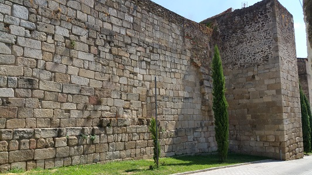
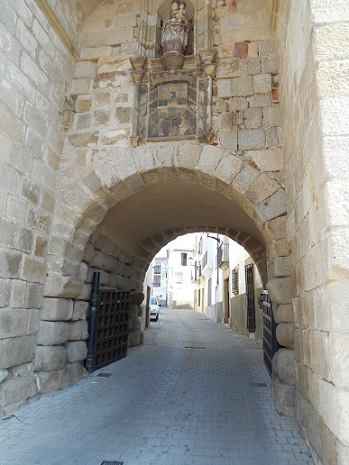
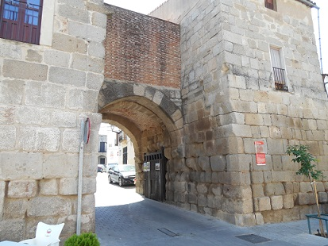

|
C O R I A
El origen de la ciudad se remonta a la
época celta, como capital de los vettones, Caura. Tras la conquista romana,
Castrum Cecilium Cauriensis, en el siglo I a.c.e. por el Cónsul Quinto Cecilio
Metello Pio. La nueva Caurium pasa a formar parte de la provincia de Lusitania,
convirtiéndose en ciudad estipendiaría. Posteriormente en época de Constantino
se convierte en sede episcopal. Coria se localiza en Cáceres.
Su muralla fue construida en época romana hacia finales del siglo III e inicios
del siglo IV. Aunque muy bien conservadas, sobre la traza romana ha sufrido
añadidos y refuerzos a lo largo de su historia.
La muralla posee 20 torres cuadradas y cuatro puertas, formando una magnífica
muestra de la arquitectura defensiva romana del siglo IV. La muralla tiene una
anchura de unos 4 metros y su altura oscila entre los 10 y los 14 metros.
La muralla conserva algunas estelas funerarias empotradas en sus muros.
Es una de las murallas de época romana mejor conservadas en España.

La puerta del Sol, es la puerta original de la muralla romana. Originalmente de
época romana y en bastante buen estado de conservación. También es conocida como
"Puerta de San Pedro" o "Puerta de la Corredera".
Ver:
Murallas Romanas
|
 |

La Puerta de la Guía, es la puerta que menos modificaciones ha sufrido desde su
construcción en época romana. También conocida como "Puerta de las Cuatro
Calles", "Puerta de la Ciudad" o "Puerta de la Estrella". |
Más info:
http://www.coria.org/
|